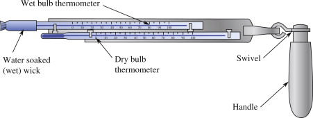
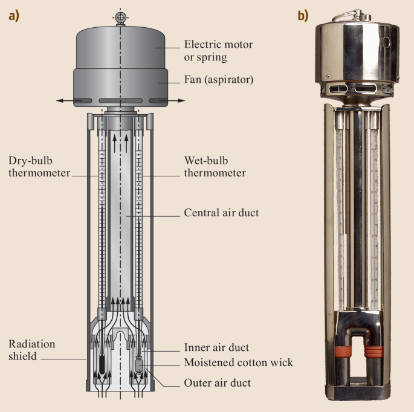

| Symbol | Name | Definition |
|---|---|---|
| \(T\) | Temperature | Quantitatification of the heat present in an object (in K unless specified otherwise) |
| \(T_d\) | Dew-point temperature | Figure 2 |
| \(T_w\) | Wet-bulb temperature | The temperature read by a ventilated thermometer covered in water at ambient temperature |
| \(RH\) | Relative Humidity | The % of absolute humidity relative to the maximum possible humidity at \(T\) |
| \(P_v\) | Vapor pressure | Equation 3 |
| \(P_v^*\) | Saturation vapor pressure at T | Maximum possible vapor pressure for a parcel of air at \(T\) Figure 1 |
| \(\rho_v\) | Vapor density | Equation 2 or Equation 7 |
| \(\rho_v^*\) | Saturation vapor density at \(T\) | Figure 2 |
| \(\rho_{vw}^*\) | Saturation vapor density at \(T_w\) | Figure 2 |
| \(VDD\) | Vapor density defect | Equation 5 |
| \(VPD\) | Vapor pressure defect | Equation 6 |
| \(R\) | Ideal gas constant | 8.31446261815324 x 10\(^{-3}\) kPa m\(^3\) g\(^{-1}\) K\(^{-1}\) |
| \(\gamma\) | Psychrometric constant (at 20 \(^{\circ}\) C) | 0.495 g m \(^{-3}\) K \({^-1}\) |
| \(M_{H_2O}\) | Molar mass of water | 18.01528 g mol\(^{-1}\) |
Lab 3: Atmospheric Humidity
This assignment is worth 15 points.
Objectives
This laboratory is intended to give you some familiarity with these various expressions for atmospheric water content. We compare measurements of vapor density, vapor pressure, relative humidity, dew point temperature and vapor density deficit inside the classroom with measurements outdoors.
- Differentiate between the ways moisture is represented in the atmosphere, specifically, dew point temperature, absolute humidity, vapor pressure, saturation vapor pressure, relative humidity and vapor pressure deficit.
- Using equations, describe the relationship between different measures of atmospheric humidity
1 Theory
Water vapor constitutes a fairly small part of our atmosphere Table 2. However, it plays a disproportionately important role in the Earth’s climate system in your day to day life! We use the term humidity to describe the amount of water vapor present in a given parcel of air.
The rate of evaporation of water from a surface depends on atmospheric humidity. Thus the rate at which a soil dries and vegetation consumes water, depends in part on the atmospheric humidity.
Additionally, evaporation from the lungs and of sweat from the skin is an important mechanism for maintaining a consistent body temperature in mammals and birds. The efficiency of the evaporative cooling depends on evaporation rate which, in turn, depends partly on the atmospheric humidity.
| Gas | Abbreviation | Proportion |
|---|---|---|
| Nitrogen | N2 | 78.08% * |
| Oxygen | O2 | 20.95% * |
| Argon | Ar | 0.93% * |
| Carbon Dioxide | CO2 | 0.04% * |
| Misc. Trace Gasses | <0.01% * | |
| Water Vapor | H2O | 0-3% ** |
The Ideal Gas Law
You may recall from a high school chemistry class, the Ideal Gas Law (Equation 1) can be used to describe the state of some a gas as a function of pressure (\(P\)), volume (\(V\)), temperature (\(T\)), and the amount of the gas (\(n\)) in moles; with \(R\) being the ideal gas constant(see Table 1). The amount in moles of a given gas can be defined as \(n = \frac{m}{M}\), where \(m\) is the mass of the substance (in kg or g) and \(M\) is the Molar mass (in kg mol-1 or g mol-1) respectively. The molar mass of water (in g mol-1) is listed in Table 1. The Ideal Gas Law generally applies to water vapor as it does other gasses and can be used to help explain some important relationships.
\[ PV=nRT \tag{1}\]
Two key metrics we use to describe atmospheric moisture in meteorology are:
- Vapor density: \(\rho_v\)
- This metric quantifies the density of water vapor within a parcel of air and is typically given in g m-3
- It describes mass of H20 vapor (in grams) per unit volume (cubic meter) of air, i.e. \(\frac{m_{H2O}}{V}\).
- Vapor pressure: \(P_v\)
- This metric quantifies the partial pressure exerted by the water vapor in a parcel of air and is typically given in kPa.
- The pressure exerted by the water vapor in the atmosphere, is only a small portion of the total pressure exerted by the atmosphere. The pressure of the various gasses is proportional composition of gasses in the atmosphere (see Table 2)
We can redefine the ideal gas law in terms of \(\rho_v\) and \(P_v\) as Equation 2 to make our calculations easier:
\[ \rho_v = \frac{P_vM}{RT} \tag{2}\]
Saturation
Under the pressures and temperature conditions experienced on Earth the atmosphere can only hold a small amount of water vapor before it becomes saturated. We add an asterisk to \(\rho_v^*\) and \(P_v^*\) to denote saturation vapor density and saturation vapor pressure respectively. Once the atmosphere reaches saturation point, H2O vapor in the air will begin to condense into its liquid form.
Determining exact value of \(\rho_v^*\) and \(P_v^*\) for a specific value of \(T\) isn’t a straightforward calculation. This is because we need to consider the latent heat of vaporization (recall this term for lecture). When water changes phase, it adds (condensation/freezing) or removes (evaporation/melting) a massive amount of energy from its surrounding environment. Calculating \(\rho_v^*\) and \(P_v^*\) exactly involves using some calculus to evaluate a differential equation known as the Clausius–Clapeyron relation. But don’t worry, we’re not going to make you do any calculus here. Empirically derived relationships have been derived to help simplify the calculations. On such relationship, is known as the Buck equation (Equation 3). Note: this empirical equation requires \(T\) to be in \(^\circ C\), instead of \(K\), which is different from most from many others. The ideal gas law Equation 1 and it’s variant Equation 2 require temperature to be in K.
\[ P_v^*=0.61121e^{(18.678-\frac{T}{234.5})(\frac{T}{257.14+T})} \tag{3}\]
By evaluating Equation 3, we can come up with an accurate approximation for \(P_v^*\) to a high degree of accuracy (\(\pm\) 0.08%) within the ranges of temperatures and pressures typically observed on Earths surface. We can then plug the result into Equation 2 to solve for \(\rho_v\). Remembering to convert our temperature values to K in order to evaluate this variant of the ideal gas law. The R code shown in Example 1 shows how you could perform these calculations in programmatically. Figure 1 shows the output of Equation 3, i.e., how \(P_v\) varies with \(T\) for selected temperatures. Figure 2 shows the output of Equation 2 for given values of \(T\) and \(P_v\).
Example 1 Functions to evaluate the Buck Equation and Ideal Gas Law. Functions are pieces of code that can be defined once an run numerous times. They make performing calculations that need to be repeated much easier. Functions may take one or more inputs in parentheses (). They and will evaluate the instructions contained between the curly brackets {}. The “return()” command can optionally be used to return one or more outputs. This script evaluates the functions then saves the outputs to a .csv file, which you can download by clicking here.
Buck_Equation <- function(T){
# Takes T in deg C and returns P_v in kPa
P_v <- 0.61121*exp((18.678-T/234.5)*(T/(257.14+T)))
return(P_v)
}
Ideal_Gas_Law_Vapor_Density <- function(T,P_v){
# Takes T in deg C and vapor pressure in kPa; converts T to K; then returns the rho_v in g m-3
R <- 8.31446261815324e-3 # Ideal Gas Constant in kPa m$^3$ K$^{-1}$ mol$^{-1}$
M <- 18.01528 # Molar mass of H20 in g m-3
T_k <- T + 273.15
rho_v = P_v*M/(R*T_k)
return (rho_v)
}
# Vector of air temperature in 1 deg C intervals over over the range -10 to 40 C
T <- c(-10:40)
P_v <- Buck_Equation(T)
rho_v <- Ideal_Gas_Law_Vapor_Density(T,P_v)
# A "data frame" is a like a table
Saturation_by_Temperature <- data.frame(T,rho_v,P_v)
write.csv(Saturation_by_Temperature,'www/Saturation_by_Temperature.csv',col.names = c("T degC","rho_v g m-3","P_v kPa"))Humidity
There are other ways of expressing the amount of moisture in the atmosphere; each has particular usefulness in certain applications. For example, relative humidity (RH); it is a given as a percentage (0-100%) and is the most commonly reported metric for humidity. When \(RH = 100%\), it indicates the atmosphere is saturated; when \(RH < 100%\), it indicates the atmosphere is not saturated. Relative humidity is the ratio of \(/rho_v\) for a given parcel of air at a certain \(T\) relative to the maximum possible \(\rho_v^*\) the parcel of air could have at that \(T\), as shown in Equation 4.
\[ RH = \frac{\rho_v}{\rho_v^*} \tag{4}\]
Note: if you have a parcel with a known \(\rho_v\) and a known \(T\), you can use Figure 2 to lookup the value of \(\rho_v^*\) to evaluate Equation 4. Alternatively - you could also evaluate Equation 3 and Equation 2 to get \(\rho_v^*\) and then evaluate Equation 4. This metric is useful because it can convey the relative saturation of the atmosphere without us having to know the absolute values. However, it can also be deceptive, because the two air parcels (one at 0 \(^{\circ}\) C and one at 20 \(^{\circ}\) C) that both have \(RH = 100%\) will contain significantly different amounts of water vapor in absolute terms.
The other commonly reported metric in every-day life is the dewpoint (\(T_d\)). This is the air temperature at which a parcel of air with a given \(\rho_v\) would be saturated. If you have a parcel of air with known \(\rho_v\), the value of \(T\) that corresponds to \(\rho_v\) in Figure 2 would be it’s dewpoint. This metric is useful because it quantifies the absolute moisture content of a parcel of air (unlike \(RH\)). However - two parcels of air can have the same \(T_d\) while having drastically different air temperatures. Both \(RH\) and \(T_d\) are limited (in different ways) because they don’t convey the full picture; but they are still useful in day-to-day life as they are relatively easy to understand.
Vapor Deficits
For calculating evaporation rates, the difference between the maximum and the actual vapor density is useful useful. This metric is called the vapor density deficit (\(VDD\)):
\[ VDD = \rho_v^* - \rho_v \tag{5}\]
Alternatively, we can calculate the vapor pressure deficit (VPD). It represents the difference between the actual and saturation vapor pressures of a parcel at temperature \(T\). This metric is particularly helpful when thinking about water exchange in plants. As the VPD increases, the rate of water loss from a plants leaves increase.
\[ VPD = P_v^* - P_v \tag{6}\]
- Note: that smaller values of VDD and VPD mean a parcel is closer saturation.
Questions
Question 1 [0.5 points]
Describe the relationship between air temperature and atmospheric saturation. How to \(P_v^*\) and \(\rho_v^*\) vary as a function of air temperature?
Question 2 [0.5 points]
The highest dew point ever recorded, 35 \(^{\circ}\) C, was recorded at Dhahran, Saudi Arabia, on July 8, 2003. With an air temperature of 42 \(^{\circ}\) C. What were the approximate values of \(\rho_v\) and \(P_v\) for this record breaking observation?
Question 3 [1 points]
The record low temperature recorded in Vancouver, BC was -18 \(^{\circ}\) C on December 29th, 1968. What are the saturation vapor pressure (\(P_v^*\)) and saturation vapor density (\(\rho_v^*\)) values at that air temperature?
Question 4 [0.25 points]
Multiple Choice: select the correct answer(s) from those listed
What would the dewpoint (\(T_d\)) of a parcel of air be with a \(P_v\) = 0.61121 kPa and a \(T\) = 25 \(^{\circ}\) C?
- 23.0266116 g m\(^{-3}\)
- 23.0266116 kPa
- 3.1685314 kPa
- 25 \(^{\circ}\) C
- 0 \(^{\circ}\) C
Question 5 [0.5 points]
Did knowing that \(T\) = 25 \(^{\circ}\) C help you answer the question above? Explain.
Question 6 [2 points]
What would the relative humidity of the parcel of air with \(P_v\) = 0.61121 kPa and a \(T\) = 25 \(^{\circ}\) C be?
Question 7 [0.25 points]
Multiple Choice: select the correct answer(s) from those listed
A airmass (homogeneous parcel of air) off the coast of British Columbia has the following characteristics: \(T\) = 10 \(^{\circ}\) C, \(RH\) = 95%. Over the course of a few days, it moves eastward into British Columbia’s interior, and in the process its temperature drops considerably, to -10 \(^{\circ}\) C. Which of the following would also need happen to the airmass on its journey east?
- A portion of the water vapor in the airmass would evaporate
- A portion of the water vapor in the airmass would condense
- Its impossible to say with only the information provided
- The relative humidity of the airmass would decrease
- The relative humidity of the airmass would increase
Question 8 [0.25 points]
Multiple Choice: select the correct answer(s) from those listed
All else equal, we would expect a field of healthy corn in the middle of July to consume _____ water on a day when the \(VPD\) is 0.5 kPa compared to a day when the \(VPD\) is 1.2 kPa.
- More
- Less
- Roughly the same
- Any of the above outcomes are possible
2 Experimental Observations
Measuring Atmospheric Humidity
A common and simple type of instrument used to measure humidity is the psychrometer (Figure 3). There are two variants of this instrument, but they have the same key components. They consist of a pair of a ventilated pair of thermometers, one of which has a wetted wick covering the bulb of the thermometer. The wet-bulb is cooled by evaporation to a value known as the “wet-bulb temperature” (\(T_w\)). If we have a measurement of both \(T\) (aka “dry-bulb” temperature) and \(T_w\) (aka “wet-bulb” temperature) we can calculate \(\rho_v\) using Equation 7; where \(\rho_{vw}^*\) is the saturation vapor density at \(T_w\) and \(\gamma\) is the psychrometric constant (see Table 1). The value of \(\rho_{vw}^*\) can be found by looking up \(T_w\) in Figure 2, or by plugging \(T_w\) into Equation 3 and Equation 2.
Wet bulb temperature (\(T_w\)) is also a useful metric, because it gives us the minimum temperature to which an object can be cooled via evaporation, under different temperature and humidity conditions. This has important ramifications for public safety; humans cannot survive exposure to \(T_w > 35 ^{\circ} C\) for more than six hours. Wet-bulb temperatures above 35 \(^{\circ} C\) are relatively rare, but they do occur in some parts of the world, and are unfortunately becoming more common as a result of climate change.
\[ \rho_v = \rho_{vw}^* - \gamma(T-T_w) \tag{7}\]


Experimental procedure
In this experiment, you will be using an Assmann psychrometer (see Figure 3 (b)) to make measurements of water vapor content of the air and calculate \(\rho_v\). First you will collect a measurement in the lab, then you will go outside and collect another set of measurements. You can follow the procedures listed below.
Examine the psychrometer and notice the wick on the wet-bulb thermometer. Use distilled water to wet the wick thoroughly.
When you are ready to begin; wind up the clockwork ventilation fan and start the fan to begin ventilating the wet-bulb thermometers.
Read measurements on both the dry- and wet-bulb thermometers every 15 s for 3 or 4 minutes, until the readings of both thermometers stabilize and record your final values of \(T\) (dry-bulb) and \(T_w\) (wet-bulb). Note make sure the ventilation fan doesn’t stop during the measurement; if it does rewind the spring to restart the fan.
Re-wet the wick on the wet-bulb thermometer. Then take the psychrometer outside and repeat the measurement as described above. Note it may take longer for the values to stabilize if the air temperature outside is significantly different from that in the air temperature in the lab.
Use your readings of \(T\) and \(T_w\) to determine: \(T_d\), \(RH\), \(\rho_v\), \(rho_v^*\), \(VDD\), \(P_v\), \(P_v^*\), \(VPD\) for both inside and outside. Hint: You may need to reference Figure 1, Figure 2, Equation 7, Equation 3, and/or Equation 2 to determine these values.
Questions
Question 9 [7.5 points]
Report your observed values of \(T\) and \(T_w\); along with your calculated values of \(\rho_v\), \(P_v\), \(T_d\), \(RH\), \(VDD\), and \(VPD\) and for both your indoors and outdoor measurements with the Assmann psychrometer. Show your work where applicable. you can use this template to organize your answers. You can round your results to 2 decimal points, but make sure not to round your answers until all intermediate calculations are complete. Note in the template, the “_” and “^” characters are used to represent subscripts and superscripts respectively.
Question 10 [2.25 points]
Were your measured water vapor densities (\(\rho_v\)) indoors and outdoors equal? Is this reasonable? Explain why.
Were your measured vapor pressure deficits (\(VPD\)) indoors and outdoors equal? Is this reasonable? Explain why.
How did your measured \(T\) and \(T_w\) values compare to your calculated \(T_d\) values?